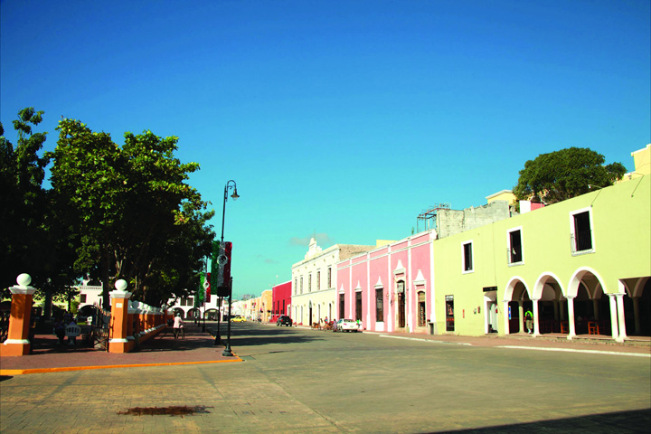
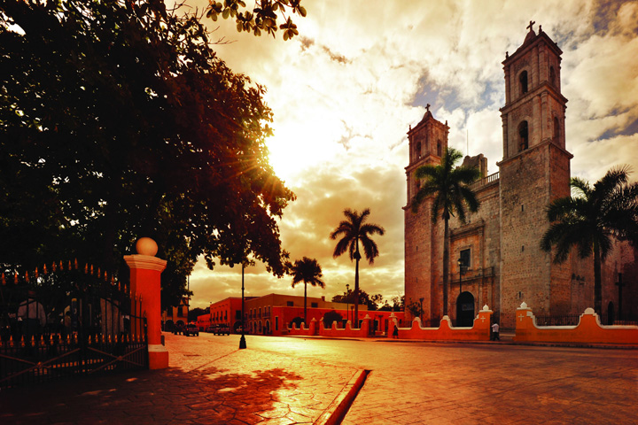
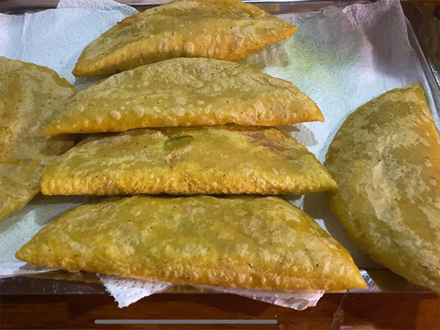

Valladolid Yucatán.

Fundada en el 23 de mayo de 1543.
Historia
Asentada en el oriente de Yucatán, Valladolid fue escenario de rebeliones y luchas entre conquistadores y conquistados. El sometimiento de los mayas del oriente de Yucatán, los rebeldes cupules, correspondió a un sobrino del conquistador llamado también Francisco de Montejo, quien estableció su campamento alrededor de una laguna a la que los naturales llamaban Chouac-Há ("agua larga"), y que a los españoles les pareció el mejor lugar para establecerse. Este sitio sería la base de operaciones para someter a los cupules y dominar su capital, Zacihual que quiere decir "Gavilán blanco" ya que simboliza las cualidades bélicas de la comunidad Zací.
Este lugar fue un importante centro político y religioso donde residían los señores del linaje cupul; doblegarlos fue la tarea más difícil de los soldados españoles, sin embargo el 23 de mayo de 1543 el capitán Don Francisco de Montejo "El Sobrino" terminó por fundar la villa a la que llamó Valladolid, como homenaje a la ciudad castellana del mismo nombre.
El 28 de mayo de 1543 tuvo que cambiar su lugar de asentamiento debido a que el terreno no era bueno, las tierras infértiles, el clima húmedo y malsano, y muchos de los pobladores habían enfermado. Decidieron trasladarlo a las ruinas de la ciudad maya de Zací, palabra que significa "gavilán blanco", mismo que se aprecia hoy en día en su escudo. Valladolid adquirió la categoría de "ciudad" el 13 de diciembre de 1823.
Comida preferida
Valladolid cuanta con lugares muy buenos de empanadas, al igual de contar con lugares de mucha calidad de comida tradicional yucateca.
